لبست ۲۵۰ فیلم برتر IMDb رو از طریق لینک زیر میتونید مشاهده کنید :
مثلا من فیلم The Dark Knight رو باز میکنم :
تو صفحه هر فیلم یه سری اطلاعات از جمله نویسنده، کارگردان، بازیگران ستاره و … نوشته شده. اگر روی فلش مقابل Start (ستارگان فیلم) کلیک کنید :
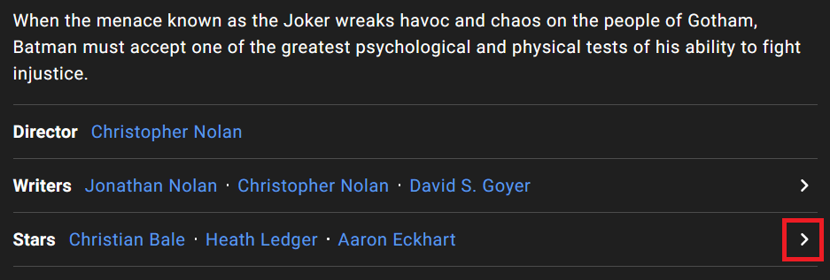
لینک زیر باز میشه و لیست کامل بازیگران و خدمه فیلم (صدابردار، جلوه های ویژه و …) رو نمایش میده :
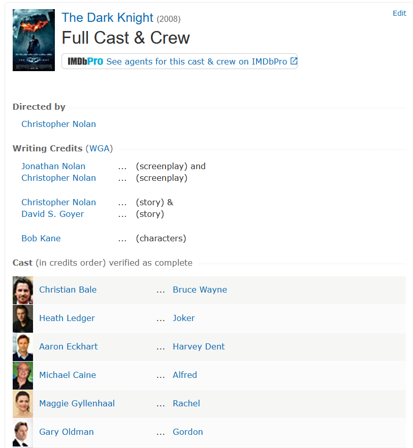
توی این صفحه اسم همه وجود داره. حتی اون سیاهی لشکری که یه لحظه از کنار خیابون رد شده! اما من اونها رو نمیخوام! فقط بازیگران اصلی رو میخوام. برای همین نام هایی که بعد Rest of cast listed alphabetically نوشته شده رو حذف خواهم کرد :
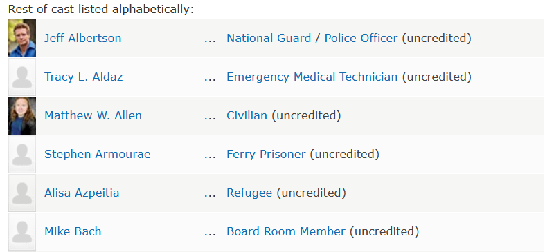
برخلاف مقالات قبلی که در ویرگول مینوشتم و خیلی بحث کدنویسی رو پیش نمیکشیدم، اینجا میخوام کد هایی که با استفاده از اونها این پروژه رو انجام دادم رو توضیح بدم. اولین کاری که باید انجام بدیم اینه که لیست ۲۵۰ فیلم برتر IMDb رو استخراج کنیم. روش اول استفاده از کتابخانه pandas است. خیلی ساده لینک صفحه ۲۵۰ فیلم برتر رو میدیم و جدولی که داخلش هست رو استخراج میکنه :اما مشکلی که این روش داره اینه که فقط محتویات ظاهری جدول رو استخراج میکنه :
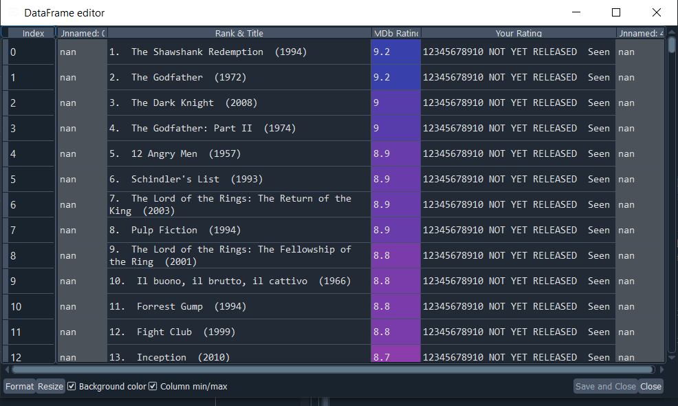
اما چیزی که من میخوام شناسه هر فیلمه. مثلا tt0068646 شناسه فیلم The Godfather است. با جایگزین کردنش با Movie_ID در لینک زیر میتونیم لیست کامل بازیگران و خدمه این فیلم رو ببینیم :
اگر به ساختار کد های html صفحه ۲۵۰ فیلم برتر نگاه کنید میبینید که این Movie_ID در داخل href تگ a قرار داده شده :
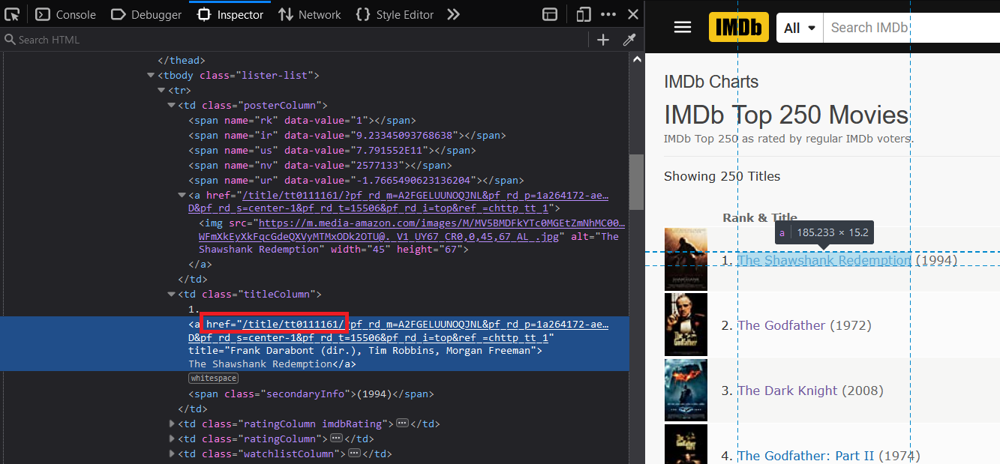
برای استخراج این ID ها از Regex استفاده کردم :اول اومدم کد html صفحه رو استخراج کردم. بعد یه Regex نوشتم که تمام string هایی که شامل عبارت زیر هستند رو در بیاره :
متد findall همه string هایی که در این صفحه html وجود داره رو استخراج میکنه اما به جای اینکه ۲۵۰ تا باشه ۵۰۰ تاست! چرا؟ چون Movie_ID توی href تصویر فیلم هم وجود داره :
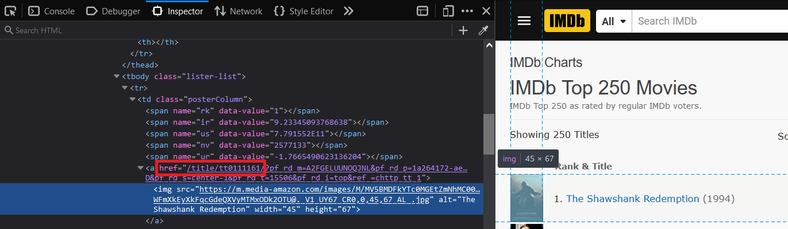
به همین دلیل نتیجه رو داخل set قرار دادم که موارد تکراری رو حذف کنه. به این ترتیب ما موفق شدیم لیست ID فیلم های برتر رو استخراج کنیم :
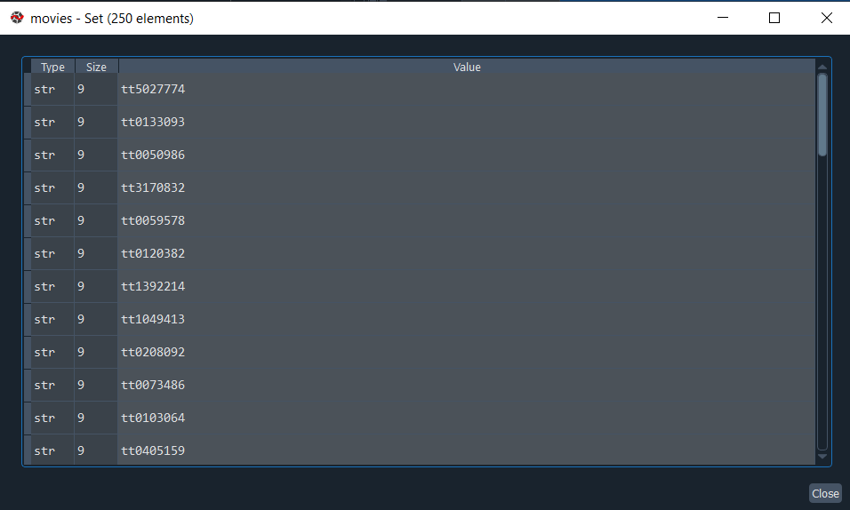
اما یک راه دیگه هم وجود داره. ما میتونیم از BeautifulSoup هم استفاده کنیم :اینجا من اول با استفاده از کتابخانه requests کد html صفحه رو استخراج کردم. بعد به عنوان ورودی به BeautifulSoup دادم. حالا چه جوری اطلاعات جدول رو استخراج کنیم؟ class این جدول برابر است با chart full-width :
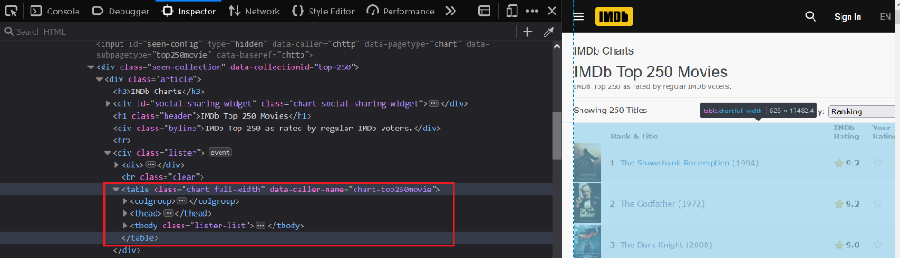
بعد از اینکه html جدول رو گرفتم، اومدم تمام tr ها رو استخراج کردم. tr ها در واقع سطر های این جدول ما هستند :
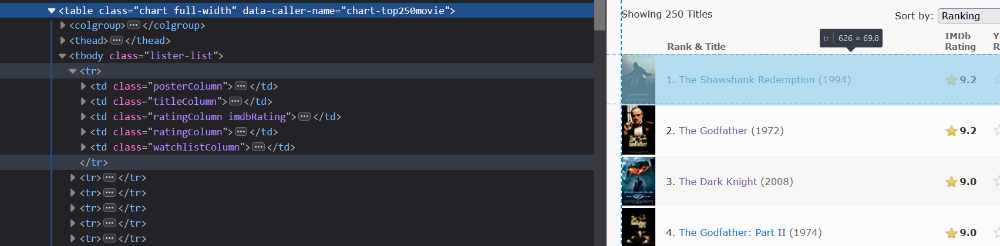
حالا هر کدوم از این tr ها یکسری td داخلشون وجود داره. من کدوم رو میخوام؟ اونی که کلاس titleColumn است. چرا؟ چون Movie_ID داخل اینه. بعد href داخل تگ a رو میگیرم و ذخیره میکنیم :
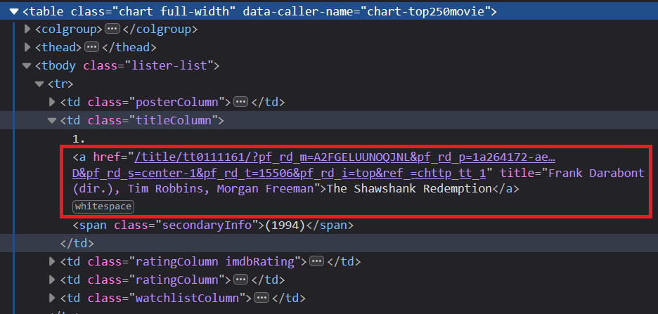
پس الان ما Movie_ID تمام این ۲۵۰ فیلم رو داریم!
حالا باید دونه دونه صفحه این فیلم ها رو باز کنیم و اسامی بازیگران رو استخراج کنیم. کدش به صورت زیر میشه :اینجا یه متد داریم به نام get_cast که url فیلم رو که به صورت زیره دریافت میکنه و لیست اسامی بازیگران رو برمیگردونه :
پایین تر یه حلقه for نوشتم که دونه دونه Movie_ID ها رو انتخاب میکنه و برای تابع get_cast میفرسته و نتیجه رو داخل یک دیکشنری به نام moive_cast ذخیره میکنه :
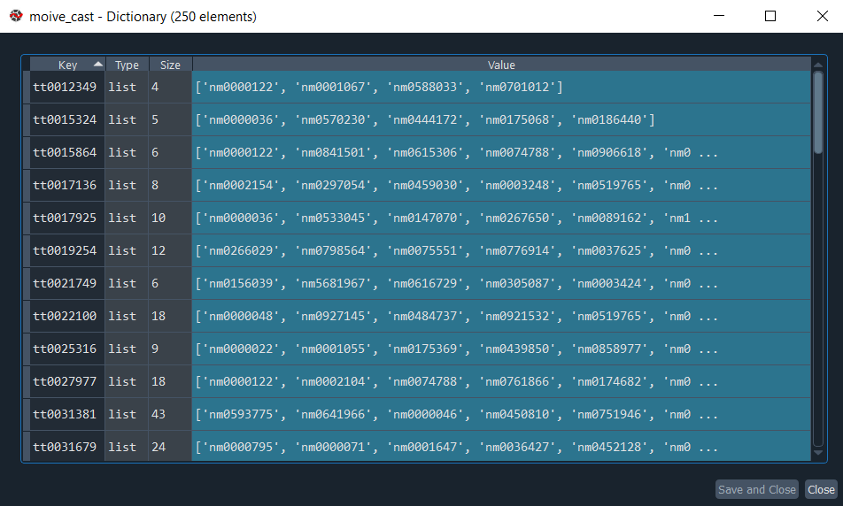
هر سطر از این دیکشنری لیستی از بازیگران یک فیلم رو نگهداری میکنه. هر کدوم از این مقادیری که با nm شروع میشن شناسه یک بازیگر در سایت IMDb هستند :
در مجموع شناسه ۹۶۶۹ بازیگر رو استخراج کردم.
برای اینکه این گراف با ۹۶۶۹ گره و ۶۷۷۲۶۲ یال (جهت دار) رو تحلیل کنم از ماتریس مجاورت استفاده میکنم. در واقع این ماتریس ۹۶۶۹ سطر و ۹۶۶۹ ستون داره و هر کدوم از درایه های این ماتریس میتونن ۰ یا ۱ باشند. اگر ۱ باشند یعنی اون دو تا بازیگر با هم در یک فیلم بازی کردند. پس یه دیکشنری باید ایجاد کنم که شناسه بازیگران رو به ۰ تا ۹۶۶۸ نگاشت کنه :دیکشنری cast_to_index رو در ادامه استفاده میکنیم. مثلا برای اینکه شناسه بازیگر nm0890575 رو پیدا کنیم مینویسم :
در نهایت با استفاده کد زیر ماتریس رو پر میکنیم :با استفاده از permutations میایم و تمام حالت های دو تایی که شناسه های داخل لیست میتونن داشته باشند رو در ماتریس مقداردهی میکنیم. مثلا اگر لیست زیر رو داشته باشیم :
تمام حالت های دو تایی به صورت زیر میشه :
این ماتریس خیییلی بزرگه! حجمی در حدود ۷۰۰ مگابایت داره. به همین دلیل اون رو به صورت sparce ذخیره میکنم :که حجمش چیزی در حدود ۱۵۰ کیلوبایت میشه و میتونید از لینک زیر دانلودش کنید :
با استفاده از کد زیر هم میتونیم این ماتریس رو رسم کنیم :که نتیجه به صورت زیر میشه :
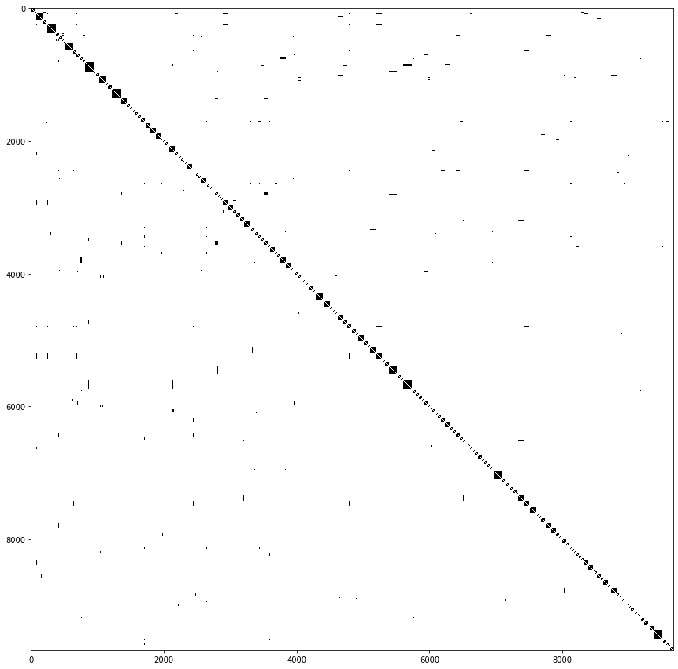
البته اگر در cast_to_index به جای اینکه index رو به صورت ترتیبی یکی یکی زیاد کنیم به صورت تصادفی مقداردهی میکردیم نتیجه به صورت زیر میشد : برای پیدا کردن community ها یا همون باند های بازیگری من از الگوریتم louvain استفاده کردم. برای آشنایی با این الگوریتم میتونید از منابع زیر استفاده کنید :
با استفاده کد زیر میتونیم به کمک الگوریتم louvain باند های بازیگری رو پیدا کنیم :که نتیجه به صورت زیر میشه :
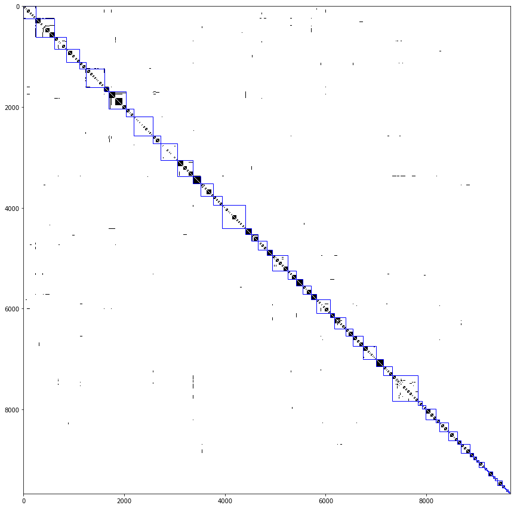
لیست این community ها در louvain_comms نگهداری میشه :
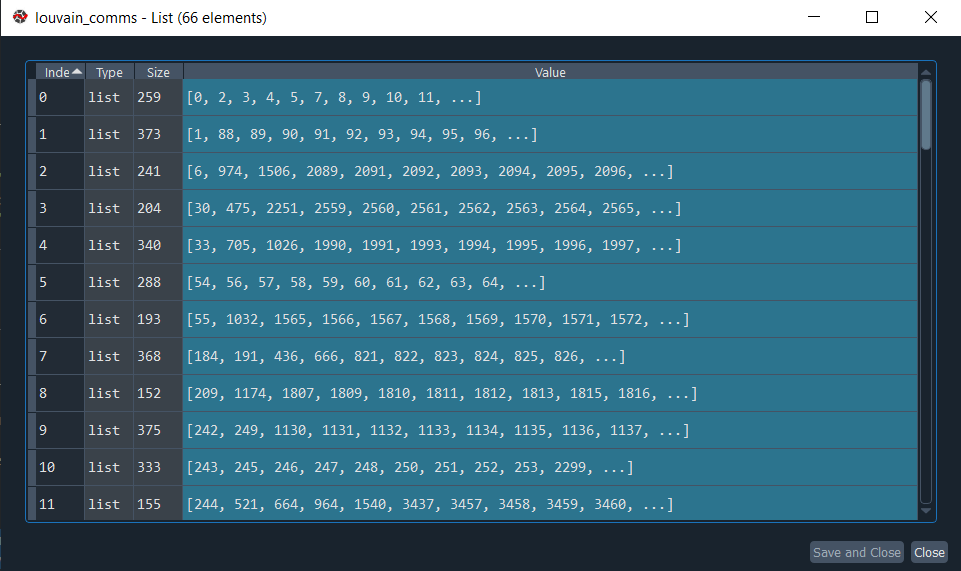
در مجموع ۶۵ باند بازیگری داریم. مثلا community یا باند اول ۲۵۹ عضو داره که بیشتر با هم فیلم بازی کردند. هر کدوم از مقادیر لیست های بالا هم همون اندیس سطر ماتریس ما هستند که با استفاده cast_to_index میتونیم بهشون دسترسی داشته باشیم.
nb.neighbours()
| title | date | |
|---|---|---|
| prev | مروری بر نظرات نامحبوب در توییتر فارسی! | ۱۴۰۱/۰۱ |
| next | ربات فیواستار فارسی زیر ذرهبین! | ۱۴۰۱/۰۲ |